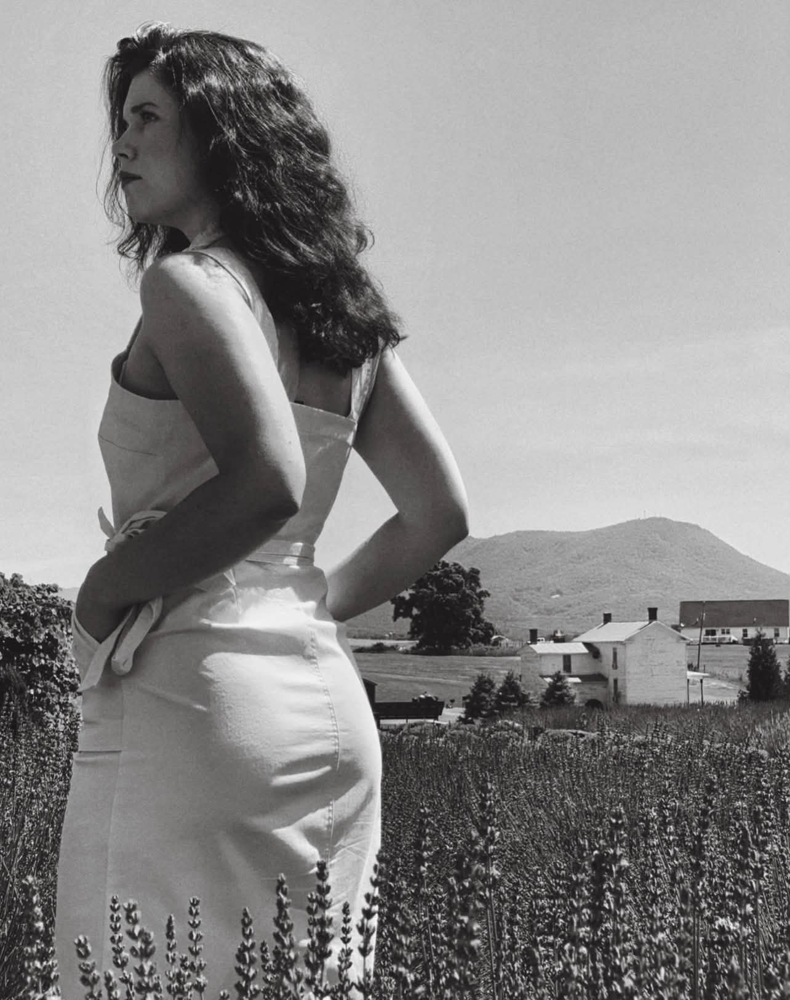
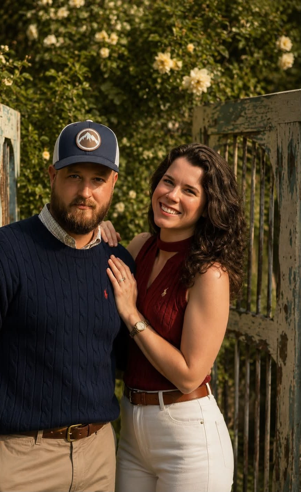

Gardens
Entry No. 001
Wildflowers on the Parkway
Blue Ridge Parkway, Virginia
Nobody plants the best gardens in Virginia — they plant themselves, along four hundred miles of fence line.
A husband-and-wife travel journal, kept the old way — a photograph, a place, and a few honest lines.
Read the latest entryNobody plants the best gardens in Virginia — they plant themselves, along four hundred miles of fence line.
Every good town keeps one street it forgot to modernize. You find it by following the brick.
Quiet places, photographed early, written about slowly.
Travel is our exercise plan: miles on foot, farm-stand food, and air that hasn't been indoors all week. Every entry logs the walking.
Every view on this site was earned on foot. We log the miles in each entry — the long way home counts double.
Our nutrition philosophy is simple: if a farm stand sells it and a dog named Biscuit guards it, it's health food.
The cure for most things is a quiet hour outside before the day gets opinions. We take ours by still water.
Finds from little shops and favorite photographs, saved to our Pinterest — products link to the makers, images link to the journal entry they came from.
Finds from other makers' shops that stopped us mid-scroll. Saved, coveted, and shared here.
“Anywhere with flowers in the window boxes is worth pulling over for.”


We keep this journal so the trips stay ours long after the trunk is unpacked — every entry a photograph, a place, and the story of how we found it.
If the journal earned a smile, a coffee keeps the wheels turning and the entries coming. No subscriptions, no fuss — just gas money and gratitude.
☕ Buy us a coffeeTell us where you're writing from, what to photograph next, or which entry felt like home.